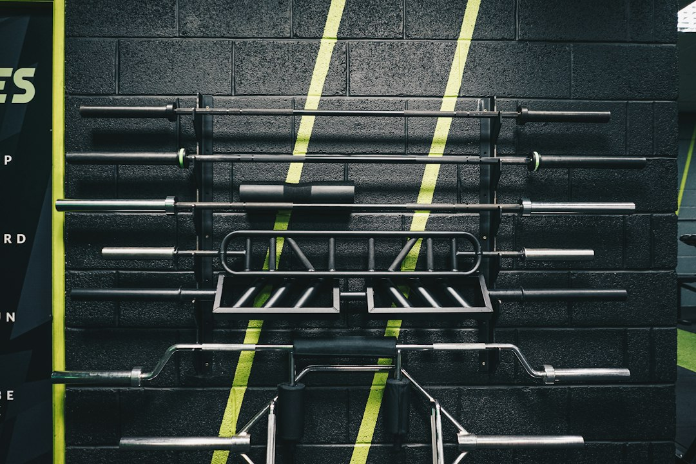

L’innovazione nel fitness: come AresAI rivoluziona l’allenamento e la nutrizione per Personal Trainer e AtletI

L’evoluzione digitale nel fitness: ottimizzare allenamento e nutrizione con AresAI per Personal Trainer, Palestre, Fitness Coach e Atleti
- L’evoluzione del fitness richiede strumenti digitali innovativi, per superare inefficienze operative e migliorare risultati.
- La gestione manuale di carichi, serie e controllo alimentare ostacola performance e coinvolgimento.
- AresAI di RM Studio integra Voice Coach H24 e Dieta Fotografica multimodale, alleggerendo il carico operativo e aumentando l’efficacia di allenamento e diete.
Analisi approfondita della notizia e delle implicazioni operative
Nel contesto attuale, caratterizzato da incremento esponenziale di pratiche di training personalizzato, il settore fitness si trova di fronte a nuove sfide operative. L’adozione di tecnologie digitali è diventata imprescindibile per ottimizzare l’esperienza di allenamento di atleti e clienti di Palestre e Personal Trainer. La notizia del recente sviluppo tecnologico evidenzia come la digitalizzazione dei processi, che fino ad oggi richiedevano inserimenti manuali di dati come carichi, serie e dettagli nutrizionali, stia rivoluzionando il settore in modo profondo.
L’utilizzo eccessivo di appunti manuali o digitazione continua durante l’allenamento costituisce un freno non solo all’efficacia del workout, ma anche alla motivazione e al coinvolgimento dell’atleta. Dal punto di vista della gestione alimentare, il monitoraggio puntuale e dettagliato di calorie e nutrienti risulta spesso tedioso o poco accurato se affidato a registrazioni tradizionali.
Nei prossimi 24 mesi si prevede un’accelerazione nell’adozione di piattaforme intelligenti che uniscono automazione, intelligenza artificiale e interfacce user-friendly destinate proprio a superare questi limiti, trasformando sia l’esperienza utente che l’efficienza operativa dei professionisti del fitness.
Le conseguenze e i costi di non agire
Continuare a fare affidamento su metodi tradizionali per il tracciamento di serie, carichi e alimentazione ha un impatto concreto sul business di personal trainer e strutture. Il dover digitare o annotare manualmente dati durante l’allenamento comporta una significativa perdita di tempo e attenzione, distogliendo l’atleta dalle prestazioni e limitando l’interazione con il coach.
Inoltre, la noia e l’errore intrinseco nella registrazione di calorie e grammi degli alimenti possono compromettere il percorso di orientamento nutrizionale, fondamentale per risultati sostenibili. Questo doppio sforzo manuale incide direttamente sulla soddisfazione del cliente e sulla reputazione del coach o della palestra.
I costi nascosti di queste inefficienze includono una minore fidelizzazione del cliente, riduzione della produttività e ritardi nell’adattamento dei programmi di training e dieta ai progressi effettivi, rischiando di perdere competitività in un mercato in rapido cambiamento.
Come AresAI risolve il problema
AresAI, il SaaS innovativo sviluppato da RM Studio, si propone come la risposta tecnologica naturale per superare gli ostacoli operativi del settore fitness. Grazie a un’interfaccia nativa e integrata, AresAI innova l’esperienza di personal trainer, palestre, fitness coach e atleti con due funzionalità chiave:
- Voice Coach H24 tramite QR Code sul rack della sala pesi: l’atleta può interagire vocalmente con il sistema senza interrompere l’allenamento, registrando automaticamente carichi, serie e ripetizioni. La tecnologia elimina la necessità di digitare o scrivere dati, offrendo un coaching dinamico e personalizzato in tempo reale.
- Dieta fotografica multimodale istantanea: basta una foto al piatto per avere un’analisi immediata di calorie, macronutrienti e porzioni. Questo metodo rivoluziona la gestione alimentare, rendendola semplice, veloce e precisa.
Questi tool permettono di dedicare più attenzione alla performance e meno al data entry, mentre il professionista ha accesso a report dettagliati e aggiornati automaticamente, supportando decisioni più rapide e strategie di allenamento e nutrizione più efficaci.
| Gestione Tradizionale | Con AresAI |
|---|---|
| Digitazione manuale di carichi e serie durante l’allenamento | Voice Coach H24 con comando vocale su QR Code, zero digitazioni |
| Registrazione fastidiosa e noiosa di calorie e grammature degli alimenti | Analisi nutrizionale istantanea con fotografia multimodale del piatto |
| Scarso coinvolgimento e perdita di tempo operativo | Maggior focus su performance, coaching efficiente e report automatici |
| Rischio di errori e dati incompleti | Dati precisi e aggiornamenti in real time per decisioni immediate |
💡 Ti è stato utile questo approfondimento?
Condividilo con un collega o un amico del settore Personal Trainer, Palestre, Fitness Coach e Atleti a cui potrebbe interessare!
FAQ
1. Quanto tempo serve per integrare AresAI in una palestra o con i clienti?
L’integrazione di AresAI è rapida e intuitiva, grazie alla tecnologia QR Code e interfaccia vocale. La formazione richiede poche ore, con supporto dedicato di RM Studio.
2. AresAI è adatto anche ad atleti amatoriali o solo ai professionisti?
AresAI è scalabile e pensato sia per personal trainer professionisti che atleti amatoriali che vogliono monitorare la propria crescita senza sforzi manuali.
3. Quali dispositivi sono necessari per utilizzare la Dieta fotografica multimodale?
Basta uno smartphone con fotocamera integrata e connessione internet per scattare e inviare la foto del piatto, ricevendo analisi e suggerimenti istantanei.
Inizia Subito
Atleta PRO a €19/mese o Coach Hub per Personal Trainer a €99/mese.
Fonti Ufficiali e Risorse Esterne
Scopri l'Intelligenza Artificiale per la tua attività
Ottimizza i processi e aumenta le vendite con le soluzioni B2B di RM Studio.
Scopri AresAI